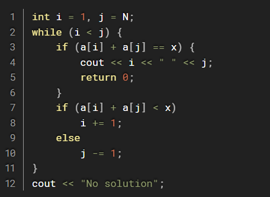
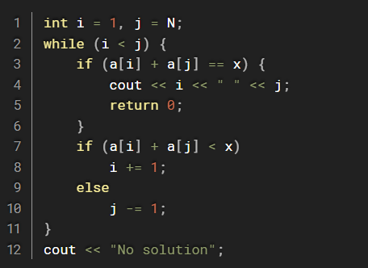
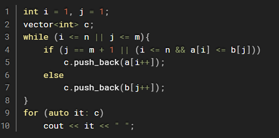
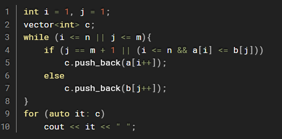

TWO POINTER
Writer: Arya
KNOWLEDGE YOU NEED TO KNOW
INTRODUCTION
The two-pointer technique is a powerful algorithmic tool used to solve problems efficiently by processing data with two indices, or pointers, moving through the data structure. It is commonly applied in scenarios involving arrays, linked lists, or strings and is particularly useful for problems involving searching, sorting, or subsets.
THE IDEA OF TWO POINTER
The idea is to use two pointers to traverse or manipulate the input data structure in a coordinated way. Depending on the problem, the pointers might move:
- In the same direction (e.g., sliding window problems).
- Towards each other (e.g., problems involving finding pairs or subarrays that meet a condition).
COMMON USE CASES
1. Finding pairs or triplets in a sorted array:
- Example: Find two numbers in a sorted array that sum up to a target.
Ex: a=[2,5,6,8,10,12,15] and x=16
- Use two pointers: one starting at the beginning and one at the end of the array.
 

2. Merging or comparing two sorted arrays:
- Example: Merge two sorted arrays or find their intersection.
Ex: a=[1,3,6,8,10];b=[2,6,7,12,14,15];c=merge(a,b)
- Use two pointers, each starting at the beginning of one array, and move based on comparisons.
 

KEY STEPS TO IMPLEMENT
1. Sort the data (if required by the problem).
2. Initialize pointers: Depending on the problem, the pointers may start at the beginning, at the end, or at different positions.
3. Move pointers strategically: Adjust the pointers based on the logic of the problem (e.g., increment, decrement, or jump).
4. Check conditions: Evaluate the condition for stopping or collecting results.
CONCLUSION
The two-pointer technique is a simple yet efficient approach for solving problems involving linear data structures such as arrays, strings, or linked lists. It is particularly effective for reducing the time complexity of algorithms that require iterating through data to find relationships or conditions (e.g., pairs, subsets, or ranges).